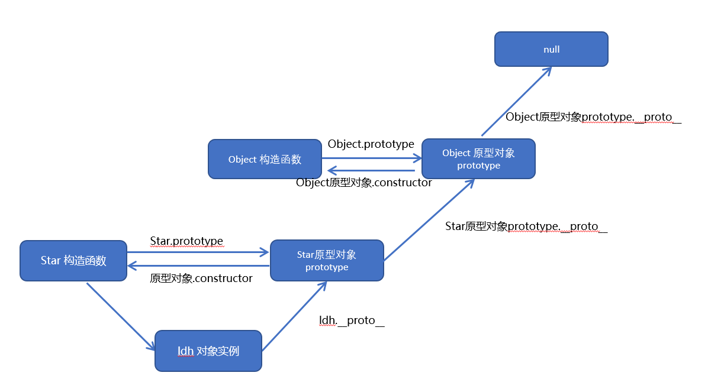

面向过程与面向对象
面向过程
- 面向过程就是分析出解决问题所需要的步骤，然后用函数把这些步骤一步一步实现，使用的时候再一个一个的依次调用就可以了。
面向对象
- 面向对象是把事务分解成为一个个对象，然后由对象之间分工与合作。
- 特性：封装性，继承性，多态性
面向过程与面向对象对比
| 面向过程 | 面向对象 | |
|---|---|---|
| 优点 | 性能比面向对象高，适合跟硬件联系很紧密的东西，例如单片机就采用的面向过程编程。 | 易维护、易复用、易扩展，由于面向对象有封装、继承、多态性的特性，可以设计出低耦合的系统，使系统 更加灵活、更加易于维护 |
| 缺点 | 不易维护、不易复用、不易扩展 | 性能比面向过程低 |
对象与类
对象
对象是由属性和方法组成的：是一个无序键值对的集合,指的是一个具体的事物
- 属性：事物的特征，在对象中用属性来表示（常用名词）
- 方法：事物的行为，在对象中用方法来表示（常用动词）
1.
创建对象
//以下代码是对对象的复习
//字面量创建对象
var ldh = {
name: '刘德华',
age: 18
}
console.log(ldh);
//构造函数创建对象
function Star(name, age) {
this.name = name;
this.age = age;
}
var ldh = new Star('刘德华', 18)//实例化对象
console.log(ldh);
类
- 在 ES6 中新增加了类的概念，可以使用 class 关键字声明一个类，之后以这个类来实例化对象。类抽象了对象的公共部分，它泛指某一大类（class）对象特指某一个，通过类实例化一个具体的对象
创建类
- 语法:
//步骤1 使用class关键字
class name {
// class body
}
//步骤2使用定义的类创建实例 注意new关键字
var xx = new name();
- 示例
// 1. 创建类 class 创建一个 明星类
class Star {
// 类的共有属性放到 constructor 里面
constructor(name, age) {
this.name = name;
this.age = age;
}
}
// 2. 利用类创建对象 new
var ldh = new Star('刘德华', 18);
console.log(ldh);
通过结果我们可以看出,运行结果和使用构造函数方式一样
类创建添加属性和方法
// 1. 创建类 class 创建一个类
class Star {
// 类的共有属性放到 constructor 里面 constructor是 构造器或者构造函数
constructor(uname, age) {
this.uname = uname;
this.age = age;
}//------------------------------------------->注意,方法与方法之间不需要添加逗号
sing(song) {
console.log(this.uname + '唱' + song);
}
}
// 2. 利用类创建对象 new
var ldh = new Star('刘德华', 18);
console.log(ldh); // Star {uname: "刘德华", age: 18}
ldh.sing('冰雨'); // 刘德华唱冰雨
注意哟:
- 通过class 关键字创建类, 类名我们还是习惯性定义首字母大写
- 类里面有个constructor 函数,可以接受传递过来的参数,同时返回实例对象
- constructor 函数 只要 new 生成实例时,就会自动调用这个函数, 如果我们不写这个函数,类也会自动生成这个函数
- 多个函数方法之间不需要添加逗号分隔
- 生成实例 new 不能省略
- 语法规范, 创建类 类名后面不要加小括号,生成实例 类名后面加小括号, 构造函数不需要加function
类的继承
- 语法
// 父类
class Father{
}
// 子类继承父类
class Son extends Father {
}
- 示例
class Father {
constructor(surname) {
this.surname= surname;
}
say() {
console.log('你的姓是' + this.surname);
}
}
class Son extends Father{ // 这样子类就继承了父类的属性和方法
}
var damao= new Son('刘');
damao.say(); //结果为 你的姓是刘
-
子类使用super关键字访问父类的方法
//定义了父类 class Father { constructor(x, y) { this.x = x; this.y = y; } sum() { console.log(this.x + this.y); } } //子元素继承父类 class Son extends Father { constructor(x, y) { super(x, y); //使用super调用了父类中的构造函数 } } var son = new Son(1, 2); son.sum(); //结果为3注意:
-
继承中,如果实例化子类输出一个方法,先看子类有没有这个方法,如果有就先执行子类的
-
继承中,如果子类里面没有,就去查找父类有没有这个方法,如果有,就执行父类的这个方法(就近原则)
-
如果子类想要继承父类的方法,同时在自己内部扩展自己的方法,利用super 调用父类的构造函数,super 必须在子类this之前调用
// 父类有加法方法 class Father { constructor(x, y) { this.x = x; this.y = y; } sum() { console.log(this.x + this.y); } } // 子类继承父类加法方法 同时 扩展减法方法 class Son extends Father { constructor(x, y) { // 利用super 调用父类的构造函数 super 必须在子类this之前调用,放到this之后会报错 super(x, y); this.x = x; this.y = y; } subtract() { console.log(this.x - this.y); } } var son = new Son(5, 3); son.subtract(); //2 son.sum();//8 -
时刻注意this的指向问题,类里面的共有的属性和方法一定要加this使用.
- constructor中的this指向的是new出来的实例对象
- 自定义的方法,一般也指向的new出来的实例对象
- 绑定事件之后this指向的就是触发事件的事件源
-
在 ES6 中类没有变量提升，所以必须先定义类，才能通过类实例化对象
-
面向对象版tab 栏切换
功能需求
- 点击 tab栏,可以切换效果.
- 点击 + 号, 可以添加 tab 项和内容项.
- 点击 x 号, 可以删除当前的tab项和内容项.
- 双击tab项文字或者内容项文字可以修改里面的文字内容
案例准备
- 获取到标题元素
- 获取到内容元素
- 获取到删除的小按钮 x号
- 新建js文件,定义类,添加需要的属性方法(切换,删除,增加,修改)
- 时刻注意this的指向问题
切换
-
为获取到的标题绑定点击事件,展示对应的内容区域,存储对应的索引
this.lis[i].index = i; this.lis[i].onclick = this.toggleTab; -
使用排他,实现只有一个元素的显示
toggleTab() { //将所有的标题与内容类样式全部移除 for (var i = 0; i < this.lis.length; i++) { this.lis[i].className = ''; this.sections[i].className = ''; } //为当前的标题添加激活样式 this.className = 'liactive'; //为当前的内容添加激活样式 that.sections[this.index].className = 'conactive'; }
添加
-
为添加按钮+ 绑定点击事件
this.add.onclick = this.addTab; -
实现标题与内容的添加,做好排他处理
addTab() { that.clearClass(); // (1) 创建li元素和section元素 var random = Math.random(); var li = '<li class="liactive"><span>新选项卡</span><span class="iconfont icon-guanbi"> </span></li>'; var section = '<section class="conactive">测试 ' + random + '</section>'; // (2) 把这两个元素追加到对应的父元素里面 that.ul.insertAdjacentHTML('beforeend', li); that.fsection.insertAdjacentHTML('beforeend', section); that.init(); }
删除
-
为元素的删除按钮x绑定点击事件
this.remove[i].onclick = this.removeTab; -
获取到点击的删除按钮的所在的父元素的所有,删除对应的标题与内容
removeTab(e) { e.stopPropagation(); // 阻止冒泡 防止触发li 的切换点击事件 var index = this.parentNode.index; console.log(index); // 根据索引号删除对应的li 和section remove()方法可以直接删除指定的元素 that.lis[index].remove(); that.sections[index].remove(); that.init(); // 当我们删除的不是选中状态的li 的时候,原来的选中状态li保持不变 if (document.querySelector('.liactive')) return; // 当我们删除了选中状态的这个li 的时候, 让它的前一个li 处于选定状态 index--; // 手动调用我们的点击事件 不需要鼠标触发 that.lis[index] && that.lis[index].click(); }
编辑
-
为元素(标题与内容)绑定双击事件
this.spans[i].ondblclick = this.editTab; this.sections[i].ondblclick = this.editTab; -
在双击事件处理文本选中状态,修改内部DOM节点,实现新旧value值的传递
editTab() { var str = this.innerHTML; // 双击禁止选定文字 window.getSelection ? window.getSelection().removeAllRanges() : document.selection.empty(); // alert(11); this.innerHTML = '<input type="text" />'; var input = this.children[0]; input.value = str; input.select(); // 文本框里面的文字处于选定状态 // 当我们离开文本框就把文本框里面的值给span input.onblur = function() { this.parentNode.innerHTML = this.value; }; // 按下回车也可以把文本框里面的值给span input.onkeyup = function(e) { if (e.keyCode === 13) { // 手动调用表单失去焦点事件 不需要鼠标离开操作 this.blur(); } } }
主要内容：
ES5面向对象核心概念:构造函数和原型对象
利用构造函数和原型对象实现继承
ES5新增方法
构造函数和原型
构造函数
问题:
- 构造函数的作用？有什么缺点?
- 何谓实例成员？何谓静态成员？
答:
- 作用：创建对象，缺点:在构造函数中定义方法时，每个实例的方法都会独占一块内存，浪费资源。
- 在构造函数中设置在this上的属性被称为实例成员，直接设置在构造函数上的属性被称为静态成员。
原型对象
问题:
- 原型对象有何作用? 让实例可以共享方法，弥补构造函数的不足
- 如何访问原型对象?
// 构造函数.prototype 或 实例.__proto__
function Fn()
var f1 = new Fn()
console.log(Fn.prototype) // {constructor:Fn,__proto__:{...}}
console.log(Fn.prototype===f1.__proto__) // true
- 原型对象最少包含哪些属性?
至少包含 constructor __proto__ 两个属性
构造函数、原型对象、实例之间的关系

原型链
所有对象均有原型对象，原型对象也有自己的原型对象，依次类推，构成了一条原型对象的链条，被称为原型链
构成原型链的属性是__proto__,原型链的终点为null
原型链上的所有属性均可被实例对象共享
// __ptoto__及prototype区分
所有对象都有__proto__,只有函数对象才有prototype
对象 可分为两大类:函数对象 及 非函数对象
所有函数(包括Object Array Date...)均可视为 Function 的实例,Function是它自己的实例
Function.__proto__==Function.prototype //true
对象成员查找规则
沿原型链逐层查找，就近原则，都查不到时返回undefined。
function F(){
}
F.prototype.sex = 'male'
var f1 = new F()
console.log(f1.sex) // male ?
function F(name,sex){
this.name = name;
this.sex = sex;
}
F.prototype.sex = 'male'
var f1 = new F('Lucy',20)
console.log(f1.sex) // 20
原型对象方法中this指向
谁调用，指向谁
利用原型对象扩展内置对象方法
//为数组增加求最大值方法
Array.prototype.max = function(){
var tmp = this[0]
for(var i=1;i<this.length;i++){
if(tmp<this[i]){
tmp = this[i]
}
}
return tmp;
}
[1,20,4].max() // 20
利用构造函数和原型实现继承
继承有什么作用?
继承发生在类之间，子类继承父类时，子类的实例中会包含父类中的所有属性及方法，利用继承可方便地实现代码复用
call方法使用
问题:
1 call方法对哪些对象有效?
2 call方法有什么作用？
// call方法功能：
// 1. 调用函数
// 2. 改变this指向，间接也扩大了函数的有效范围
// 注意：仅函数对象能调用call方法
// 使用方法 函数.call(对象，参数列表)
var o1 = {name:'jim',test:function(){alert(this.name)}}
o1.test() // jim
var o2 = {name:'Bill'}
o1.test.call(o2)
function test(){
// return arguments.slice(1) 会报错，arguments为伪数组，没有slice方法
return Array.prototype.slice.call(arguments,1)
}
test(1,2,3) //[2,3]
利用构造函数实现属性继承
function Father(name,age){
this.name = name;
this.age = age;
}
Father.prototype.sing = function(){
console.log('唱歌')
}
function Son(name,age,grade){
Father.call(this,name,age)
this.grade = grade;
}
var s1 = new Son('张三',20,9)
console.log(s1)
利用原型实现方法继承
Son.prototype = new Father()
Son.prototype.constructor = Son;
s1.sing()
研究类的本质
- ES6中的class就相当于是ES5中的构造函数
- 定义在class中的方法其实都被存放在class的prototype中
- 直接往class的prototype中添加的方法也可以被所有class的实例共享
ES5新增方法
数组相关
| 方法名 | 功能 | 使用方法 | 备注 |
|---|---|---|---|
| forEach | 遍历数组 | [1,2,3].forEach(function(ele,i,arr){console.log(ele,i,arr)}) | 没有返回值 |
| filter | 过滤数组 | [1,2,3].filter(function(ele,i,arr){return ele>1}) //[2,3] | 返回新数组 |
| some | 判断数组中是否有满足条件的元素 | [1,2,3].some(function(ele){return ele>1}) //true | 返回true/false |
| every | 判断数组中是否所有元素都满足条件 | [1,2,3].every(function(ele){return ele>1}) //false | 返回true/false |
| map | 数组映射 | [1,2,3].map(function(ele){return ele*2}) //[2 4 6] | 返回新数组 |
| reduce | 数组归纳 | [1,2,3].reduce(function(pre,cur){return pre+cur }) //6 | 返回一个值 |
reduce介绍
// 语法:arr.reduce(callback,[initialValue])
// callback （执行数组中每个值的函数，包含四个参数）
// 1、previousValue （上一次调用回调返回的值，或者是提供的初始值（initialValue））
// 2、currentValue （数组中当前被处理的元素）
// 3、index （当前元素在数组中的索引）
// 4、array （调用 reduce 的数组）
// initialValue （作为第一次调用 callback 的第一个参数。）
var arr = [1, 2, 3, 4];
var sum = arr.reduce(function(prev, cur, index, arr) {
console.log(prev, cur, index);
return prev + cur;
})
console.log(arr, sum);
打印结果：
1 2 1
3 3 2
6 4 3
[1, 2, 3, 4] 10
可以看出，上面的例子index是从1开始的，第一次的prev的值是数组的第一个值。数组长度是4，但是reduce函数循环3次。
// 高级用法-统计数组元素出现次数
var names = ['Alice', 'Bob', 'Tiff', 'Bruce', 'Alice'];
var nameNum = names.reduce(function(pre,cur){
if(cur in pre){
pre[cur]++
}else{
pre[cur] = 1
}
return pre
},{})
console.log(nameNum); // {Alice: 2, Bob: 1, Tiff: 1, Bruce: 1}
字符串相关
// trim()方法可以去掉字符串两边的空格
' a b c '.trim() // 'a b c'
对象相关
| 方法名 | 功能 | 使用方法 |
|---|---|---|
| Object.keys() | 获取对象的所有属性名 | Object.keys({a:1,b:2})//['a','b'] |
| Object.values() | 获取对象的所有属性值 | Object.values({a:1,b:2})//[1,2] |
| Object.defineProperty() | 新增/设置对象属性 |
Object.defineProperty(obj,attr,{ value:xxx, writable:false/true, enumerable:false/true, configurable:false/true}) |
writable:是否可写 enumerable:是否可枚举 configurable:是否可删除及重新设置 ,使用defineProperty设置时，它们的默认值均为false
#
函数的定义和调用
函数的定义方式
- 函数声明方式（命名函数）
function fn() {}
- 函数表达式（匿名函数）
var fn = function () {};
- 利用 new function（‘参数一’，‘参数二’，‘函数体’）
var f = new Function("a", "b", "console.log(a + b)");
f(1, 2);
-
Function 里面参数都必须是字符串格式
-
第三种方式执行效率低，也不方便书写，因此较少使用
-
所有函数都是 Function 的实例(对象)
-
函数也属于对象
函数的调用方式
- 普通函数
function fn() {
console.log("人生的巅峰");
}
// fn(); fn.call()
- 对象的方法
var o = {
sayHi: function () {
console.log("人生的巅峰");
},
};
o.sayHi();
- 构造函数
function Star() {}
new Star();
- 绑定事件函数
btn.onclick = function () {}; // 点击了按钮就可以调用这个函数
- 定时器函数
setInterval(function () {}, 1000); //这个函数是定时器自动 1 秒钟调用一次
- 立即执行函数
(function () {
console.log("人生的巅峰");
})();
// 立即执行函数是自动调用
this 指向问题
函数内部的 this 指向
- 普通函数 this 指向 window
function fn() {
console.log("普通函数的this" + this);
}
window.fn();
- 对象的方法 this 指向的是对象 o
var o = {
sayHi: function () {
console.log("对象方法的this:" + this);
},
};
o.sayHi();
- 构造函数 this 指向 ldh 这个实例对象 原型对象里面的 this 指向的也是 ldh 这个实例对象
function Star() {}
Star.prototype.sing = function () {};
var ldh = new Star();
- 绑定事件函数 this 指向的是函数的调用者 btn 这个按钮对象
var btn = document.querySelector("button");
btn.onclick = function () {
console.log("绑定时间函数的this:" + this);
};
- 定时器函数 this 指向的也是 window
window.setTimeout(function () {
console.log("定时器的this:" + this);
}, 1000);
- 立即执行函数 this 还是指向 window
(function () {
console.log("立即执行函数的this" + this);
})();
改变函数内部 this 指向
call 方法
- 可以调用函数
- 可以改变函数内的 this 指向
- 主要作用可以实现继承
apply()方法
-
调用函数 可以改变函数内部的 this 指向
-
但是他的参数必须是数组(伪数组)
-
apply 的主要应用 比如说我们可以利用 apply 借助于数学内置对象求数组最大值
var o = {
name: "andy",
};
function fn(arr) {
console.log(this);
console.log(arr); // 'pink'
}
fn.apply(o, ["pink"]);
var arr = [1, 66, 3, 99, 4];
var arr1 = ["red", "pink"];
// var max = Math.max.apply(null, arr);
var max = Math.max.apply(Math, arr);
var min = Math.min.apply(Math, arr);
console.log(max, min);
bind()方法（绑定，捆绑）
-
不会调用函数
-
可以改变函数内部的 this 指向
-
返回的是原函数改变 this 之后产生的新函数
-
如果只是想改变 this 指向，并且不想调用这个函数的时候，可以使用 bind
-
应用场景:不调用函数,但是还想改变 this 指向
var o = {
name: "andy",
};
function fn(a, b) {
console.log(this);
console.log(a + b);
}
var f = fn.bind(o, 1, 2);
//此处的f是bind返回的新函数
f(); //调用新函数 this指向的是对象o 参数使用逗号隔开
call、apply、bind 三者的异同
-
共同点 :
- 都可以改变 this 指向
- 都是只会被函数调用
-
不同点:
- call 和 apply 会调用函数, 并且改变函数内部 this 指向.
- call 和 apply 传递的参数不一样,call 传递参数使用逗号隔开,apply 使用数组传递
- bind 不会调用函数, 可以改变函数内部 this 指向.
-
应用场景
- call 经常做继承.
- apply 经常跟数组有关系. 比如借助于数学对象实现数组最大值最小值
- bind 不调用函数,但是还想改变 this 指向. 比如改变定时器内部的 this 指向.
严格模式
什么是严格模式
严格模式中的变化
变量规定
- 变量名必须先声明再使用
- 不能删除已声明变量
严格模式中 this 的指向问题
- 严格模式下全局作用域中函数中的 this 是 undefined
- 严格模式下,如果 构造函数不加 new 调用, this 指向的是 undefined 如果给他赋值则 会报错.
- 定时器 this 还是指向 window
- 事件，对象指向调用者
函数变化
- 函数不能有重名的参数
- 函数必须声明在顶层新版本的 JavaScript 会引入‘块级作用域’(Es6 中已经引入)。为与新函数接轨，不允许在非函数的代码块内声明函数。
高阶函数
高阶函数是对其他函数进行操作的函数，它接收函数作为参数或将函数作为返回值输出。
闭包
变量的作用域复习
什么是闭包
闭包（closure）指有权访问另一个函数作用域中变量的函数。简单理解就是 ，一个作用域可以访问另外一个函数内部的局部变量。
// 闭包（closure）指有权访问另一个函数作用域中变量的函数。
// 闭包: 我们fun 这个函数作用域 访问了另外一个函数 fn 里面的局部变量 num
function fn() {
var num = 10;
function fun() {
console.log(num);
}
fun();
}
fn();
闭包的作用
闭包的作用：延伸了变量的作用范围
function fn() {
var num = 250;
function fun() {
console.log(num);
}
return fun;
// return function () {
// console.log(num);
// };
}
var f = fn();
f();
闭包的案例
- 利用闭包的方式得到当前 li 的索引号
for (var i = 0; i < lis.length; i++) {
// 利用for循环创建了4个立即执行函数
// 立即执行函数也成为小闭包因为立即执行函数里面的任何一个函数都可以使用它的i这变量
(function (i) {
lis[i].onclick = function () {
console.log(i);
};
})(i);
}
- 闭包应用-3 秒钟之后,打印所有 li 元素的内容
for (var i = 0; i < lis.length; i++) {
(function (i) {
setTimeout(function () {
console.log(lis[i].innerHTML);
}, 3000);
})(i);
}
- 闭包应用-计算打车价格
/*需求分析
打车起步价13(3公里内), 之后每多一公里增加 5块钱. 用户输入公里数就可以计算打车价格
如果有拥堵情况,总价格多收取10块钱拥堵费*/
var car = (function () {
var start = 13; // 起步价 局部变量
var total = 0; // 总价 局部变量
return {
// 正常的总价
price: function (n) {
if (n <= 3) {
total = start;
} else {
total = start + (n - 3) * 5;
}
return total;
},
// 拥堵之后的费用
yd: function (flag) {
return flag ? total + 10 : total;
},
};
})();
console.log(car.price(5)); // 23
console.log(car.yd(true)); // 33
递归函数
什么是递归函数
理解:函数内部自己调用自己.这个函数就是递归函数
正则表达式概述
什么是正则表达式
正则表达式（ Regular Expression ）是用于匹配字符串中字符组合的模式。在 JavaScript 中，正则表达式也是对象。
正则表通常被用来检索、替换那些符合某个模式（规则）的文本，例如验证表单：用户名表单只能输入英文字母、数字或者下划线，
昵称输入框中可以输入中文(匹配)。此外，正则表达式还常用于过滤掉页面内容中的一些敏感词(替换)，或从字符串中获取我们想要的特定部分(提取等 。
正则表达式的特点
- 灵活性、逻辑性和功能性非常的强。
- 可以迅速地用极简单的方式达到字符串的复杂控制。
- 难懂
正则表达式在 js 中的使用
正则表达式的创建
-
通过调用 RegExp 对象的构造函数创建
//RegExp是Regular Expression 简写 var regexp = new RegExp(自变量); var regexp = new RegExp(/123/); console.log(regexp); //123 -
利用字面量创建 正则表达式
var rg = /123/;
检测正则表达式 test
test() 正则对象方法，用于检测字符串是否符合该规则，该对象会返回 true 或 false，其参数是测试字符串。
var rg = /123/;
console.log(rg.test(123)); //匹配字符中是否出现123 出现结果为true
console.log(rg.test("abc")); //匹配字符中是否出现123 未出现结果为false
正则表达式中的特殊字符
###
边界符
正则表达式中的边界符（位置符）用来提示字符所处的位置，主要有两个字符
| 边界符 | 说明 |
|---|---|
| ^ | 表示匹配首行的文本（开始） |
| $ | 表示匹配行尾的文本（结束） |
字符类
字符类表示有一系列字符可供选择，只要匹配其中一个就可以了。所有可供选择的字符都放在方括号内。
[] 方括号
表示有一系列字符可供选择，只要匹配其中一个就可以了
| 举例 | 说明 |
|---|---|
| /[abc]/ | 只要包含有a 或者 包含有b 或者包含有c都返回为 true |
| /^[abc]$/ | 三选一 只有是 a 或者是 b 或者是 c 这三个字母才返回 true |
| /^[a-z]$/ | 26 个英文字母任何一个字母返回 true - 表示的是 a 到 z 的范围 |
| /^[a-zA-Z0-9_-]$/ | 26 个英文字母(大写和小写都可以)任何一个字母返回 true |
/^[ ^ a-zA-Z0-9_-]$/ |
如果中括号里面有^ 表示取反的意思 千万和 我们边界符 ^ 别混淆 |
量词符
量词符用来设定某个模式出现的次数。
| 量词 | 举例 | 说明（true） |
|---|---|---|
| * | _/^a``$/\ | 重复 0 次或更多次 |
| + | /^a+$/ |
重复 1 次或更多次 |
| ? | /^a?$/ |
重复 0 次或 1 次 |
| {n} | /^a{3}$/ |
重复 n 次 |
| {n,} | /^a{3,}$/ |
重复 n 次或更多次 |
| {n,m} | /^a{3,16}$/ |
重复 n 到 m 次 |
表单验证
正则表达式应用场景
<input type="text" class="uname" /> <span>请输入用户名</span>
<script>
// 量词是设定某个模式出现的次数
var reg = /^[a-zA-Z0-9_-]{6,16}$/; // 这个模式用户只能输入英文字母 数字 下划线 中划线
var uname = document.querySelector(".uname");
var span = document.querySelector("span");
uname.onblur = function () {
if (reg.test(this.value)) {
console.log("正确的");
span.className = "right";
span.innerHTML = "用户名格式输入正确";
} else {
console.log("错误的");
span.className = "wrong";
span.innerHTML = "用户名格式输入不正确";
}
};
</script>
括号总结
1.大括号 量词符. 里面表示重复次数
2.中括号 字符集合。匹配方括号中的任意字符.
3.小括号表示优先级
预定义类
预定义类指的是某些常见模式的简写方式.
| 预定类 | 说明 |
|---|---|
| \d | 匹配 0-9 之间的任一数字，相当于[0-9] |
| \D | 匹配 0-9 以外的字符，相当于[^0-9] |
| \w | 匹配任意的字母，数字和下划线，相当于[A-Za-z0-9_] |
| \W | 除所有字母数字和下划线以外的字符，相当于[^A-Za-z0-9_] |
| \s | 匹配空格（宝库换行符，制表符，空格符等），相当于[\t\r\n\v\f] |
| \S | 匹配非空格的字符，相当于[^\t\r\v\n\f] |
正则替换 replace
replace() 方法可以实现替换字符串操作，用来替换的参数可以是一个字符串或是一个正则表达式
var str = 'andy和red';
var newStr = str.replace('andy', 'baby');
console.log(newStr)//baby和red
//等同于 此处的andy可以写在正则表达式内
var newStr2 = str.replace(/andy/, 'baby');
console.log(newStr2)//baby和red
//全部替换
var str = 'abcabc'
var nStr = str.replace(/a/,'哈哈')
console.log(nStr) //哈哈bcabc
//全部替换g
var nStr = str.replace(/a/a,'哈哈')
console.log(nStr) //哈哈bc哈哈bc
//忽略大小写i
var str = 'aAbcAba';
var newStr = str.replace(/a/gi,'哈哈')//"哈哈哈哈bc哈哈b哈哈"
案例:过滤敏感词汇
<textarea name="" id="message"></textarea> <button>提交</button>
<div></div>
<script>
var text = document.querySelector('textarea');
var btn = document.querySelector('button');
var div = document.querySelector('div');
btn.onclick = function() {
div.innerHTML = text.value.replace(/激情|gay/g, '**');
}
</script>
变量声明相关
问题：
-
let的作用?有何特性?
-
const的作用？有何特性
- let const var关键字区别?
回答:
- 定义变量 特性 具备块级作用域 没有变量提升 存在暂时性死区现象
- 定义常量 具备块级作用域 必须声明时就赋值
- const定义常量(初次赋值后不能重新赋值) let及var定义变量，const及let具备块级作用域，var没有，const及let不存在常量/变量提升，var 存在变量提升现象
面试题:
let arr = [];
for (let i = 0; i < 2; i++) {
arr[i] = function () {
console.log(i);
}
}
arr[0](); //0
arr[1](); //1
var arr=[]
for(let i=0;i<2;i++){
arr[i]=function(){
i+=3
console.log(i);
}
}
arr[0]() //3
arr[1]() //4
var arr=[]
for(var i=0;i<2;i++){
arr[i]=function(){
i+=3
console.log(i);
}
}
arr[0]() //5
arr[1]() //8
| var | let | const |
|---|---|---|
| 函数作用域 | 块级作用域 | 块级作用域 |
| 会变量提升 | 无变量提升 | 无变量提升 |
| 无暂时性死区现象 | 存在暂时性死区 | 存在暂时性死区 |
| 值可变化 | 值可变化 | 值不可变化 |
| 声明时可不赋值 | 声明时可不赋值 | 必须声明时赋值 |
| 可重复声明 | 不可重复声明 | 不可重复声明 |
解构赋值
问题:
1 解构赋值有什么好处?
2 有几种解构赋值的方式？
答:
1 让变量赋值更简洁
2 两种 数组解构 对象解构
// 数组解构
let [a,b,c] = [1,2,3]
console.log(a,b,c) // 1,2,3
// 对象解构
let {a,b,c} = {a:1,b:2}
console.log(a,b,c) // 1,2,undefined
let {a:hello,b:hi,c} = {a:1,b:2}
console.log(hello,hi) // 1,2
函数相关
问题:
- 箭头函数有什么好处?和普通函数有何不同？
- 剩余参数和扩展运算符有何区别？
答:
- :箭头函数更简洁,和普通函数区别:没有自己的this和arguments
- 剩余参数是将用,连接的数据转成数组，而扩展运算符是将数组或伪数组转换成用逗号连接的数据，扩展运算符可视为剩余参数的反操作
// 箭头函数
const fn = (形参列表)=>{函数体}
当只有一个形参时()可省略,当函数体只有一句代码时{}也可省略
// 剩余参数
const fn = (...args)=>{console.log(args)}
fn(1,3,5,7) // [1,3,5,7]
// 剩余参数对传统方式定义函数也有效,剩余参数仅能作为形参列表中的最后一个参数
// 剩余参数与结构赋值结合
// 剩余参数应用场景:1 形参 2 解构赋值
let [a,...b]=[1,2,3,4]
console.log(a,b)//1 [2,3,4]
// 扩展运算符
var x = [1,2,3]
console.log(...x) // 1 2 3 相当于console.log(1,2,3)
// 注意:扩展运算符通常用于实参中，而剩余参数通常用作形参
// 扩展运算符的应用:1 将伪数组变为真数组 2 连接多个数组 3 实参
var divs = document.querySelectorAll('div');
var divsArr = [...divs]
var arr1 = [1,2,3],arr2 = [4,5,6];
var arr3 = arr1.push(...arr2)
内置对象相关
数组相关
| 方法 | 作用 | 使用 |
|---|---|---|
| Array.from() | 将伪数组(属性名为0,1,..,还有length属性)转化为真数组 | Array.from(arguments) |
| 数组实例.find() | 在数组中查找第一个符合条件的元素 | [1,2,3].find(ele=>ele>2) |
| 数组实例.findIndex() | 在数组中查找第一个符合条件的元素的下标，找不到返回-1 | [1,2,3].findIndex(ele=>ele>2) |
| 数组实例.includes() | 判断数组中是否存在某个元素 | [1,2,3].includes(4) |
// es6新增遍历数组的结构 for...of 直接遍历数组的每个元素
let arr = [3,4,5]
for(var o of arr){
console.log(o) // 3 4 5
}
字符串相关
模板字符串语法
//使用方法 let str = `xxxx....${表达式}yyy`
//模板字符串的特点:
// 1 换行不报错且输出时保留换行
// 2 可方便地嵌入表达式，包含 变量、函数调用、三元表达式等等
相关方法
| 方法名 | 作用 | 使用 |
|---|---|---|
| 字符串.startsWith() | 判断是否以某个字符串开头 | 'Hello'.startsWith('He') //true |
| 字符串.endsWith() | 判断是否以某个字符串结尾 | 'World'.endsWith('ld')//true |
| 字符串.repeat() | 将某个字符串重复n次，得到新字符串 | '12'.repeat(2) // 1212 |
新增数据结构
Set
set对象用于存放一组不重复的数据,new Set([1,2,1])得到set对象，可传入一个数组作实参
| 方法名 | 作用 | 备注 |
|---|---|---|
| add() | 往set对象中新增一个数据,返回当前set对象 | |
| delete() | 删除set对象中的某条数据 | |
| clear() | 清空set对象 | |
| has() | 判断set对象中是否有某个数据,有返回true,否则false | |
| forEach() | 遍历set对象 | |
| size | 属性，获取set对象数据长度 |
map
map对象存放一组键值对，其中键可以为更丰富的数据类型,普通js对象的键只能为字符串或数字,
new Map([['name', '张三'],[['grade','class'], [1,3]]])
| 方法名 | 作用 | 备注 |
|---|---|---|
| set() | 增加键值对 | |
| get() | 获取某个键对应的值 | |
| has() | 判断某个键是否存在 | |
| delete() | 删除某个键值对 | |
| clear() | 清空 | |
| size | 属性，获取键值对个数 | |
| keys() | 获取所有的键 | 静态方法 |
| values() | 获取所有的值 | 静态方法 |
| entries() | 获取所有的键以及值 | 静态方法 |
| forEach() | 遍历所有键值对 |
//经典面试题
var obj = {},obj1={a:1},o={};
o[obj]=10;
o[obj1]=20
console.log(o)//{[object Object]:20} 因js对象的属性名只能是字符串或数字，用对象作为属性名时会发生隐式转换，默认调用toString()方法
var x;
if(x==1&&x==2&&x==3){
alert('这也行?')
}
问：x为什么值时会执行if中的alert语句
当x={x:1,toString:function(){return this.x++}} 时
解答:对象 和 number型数据做 比较运算时，默认是没有意义的，为了能比较，js默认会将对象做隐式转换,转换规则为对象调用自己的toString(),以返回值 来和 number型数据比较.